library(ggplot2) theme_set(theme_minimal())
Scales
Use
Discrete
dsamp <- diamonds[sample(nrow(diamonds), 1000), ] d <- ggplot(dsamp, aes(carat, price)) + geom_point(aes(colour = clarity), size = 3) d <- ggplot(dsamp, aes(depth, price)) + geom_point(aes(colour = cut), size = 3) d + spectralscale::colour_d()
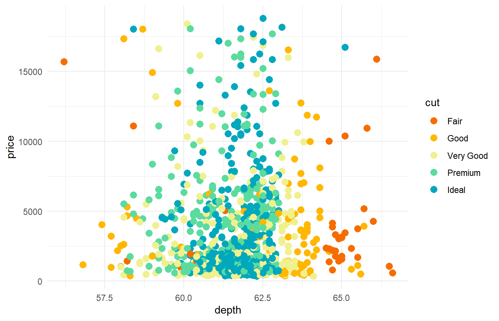
d + spectralscale::colour_d(rev = TRUE)
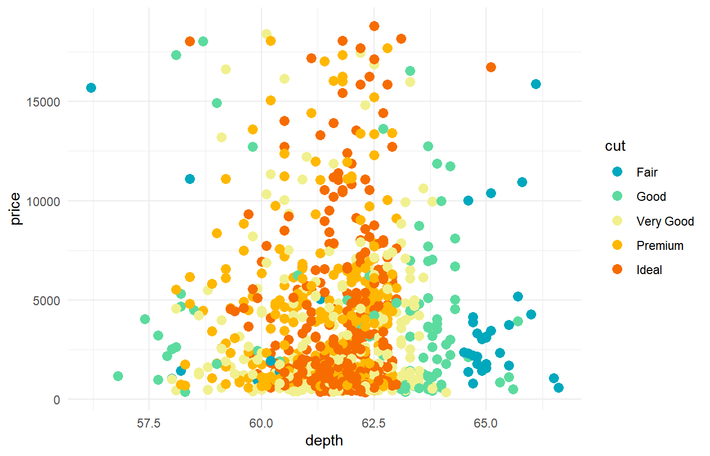
d + spectralscale::colour_d("warm")
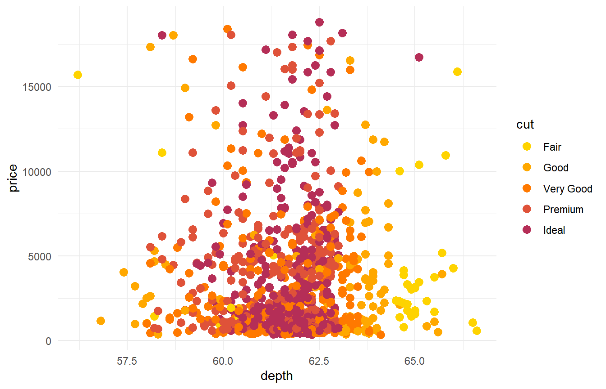
d + spectralscale::colour_d("cold")
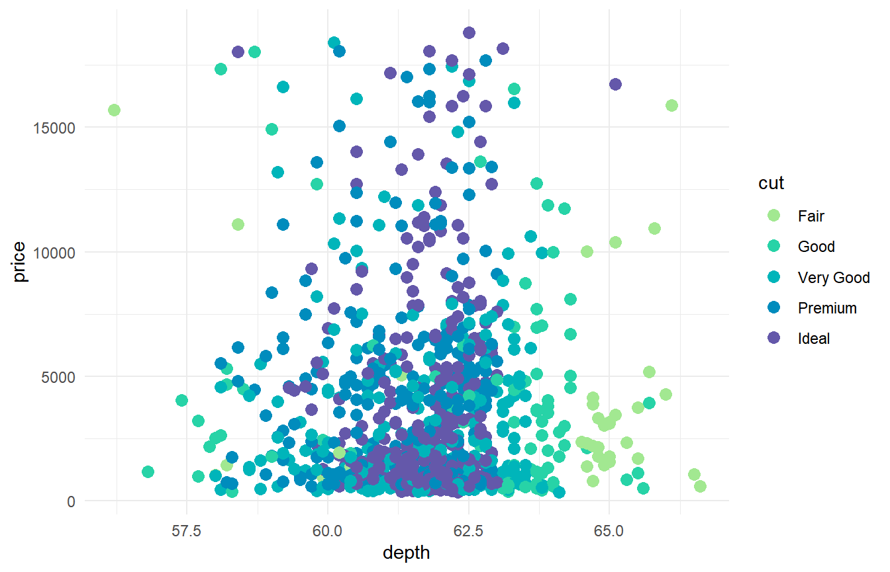
d + spectralscale::colour_d("div") # same as default

d + spectralscale::colour_d("qual")
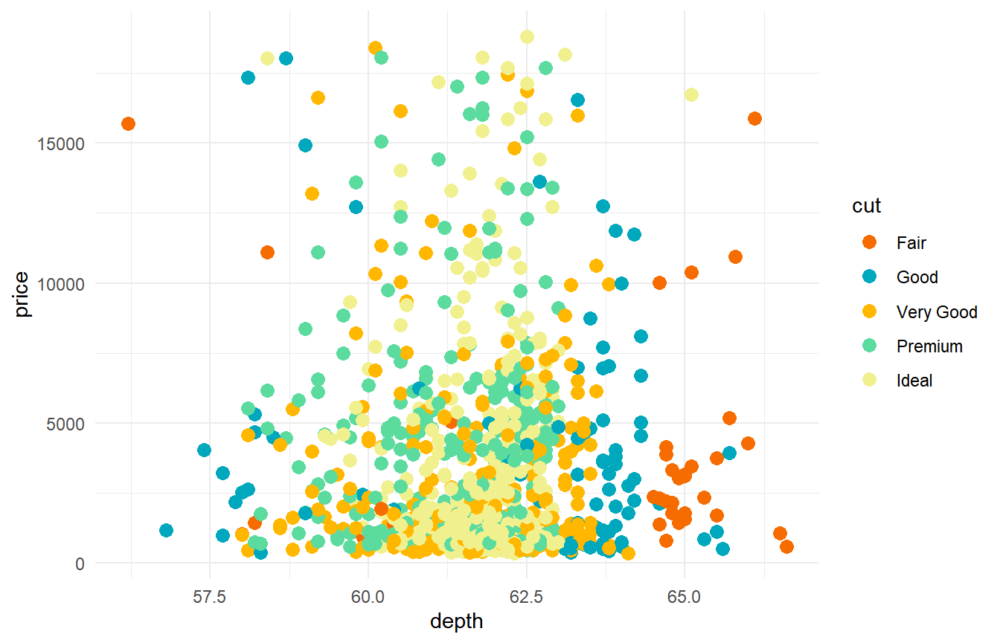
d + spectralscale::colour_d("pair")
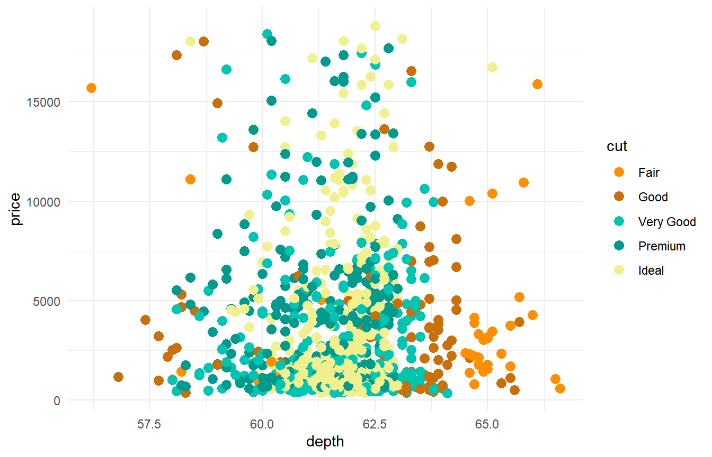
Continuous
v <- ggplot(faithfuld, aes(waiting, eruptions, fill = density)) + geom_tile() v + spectralscale::fill_c()
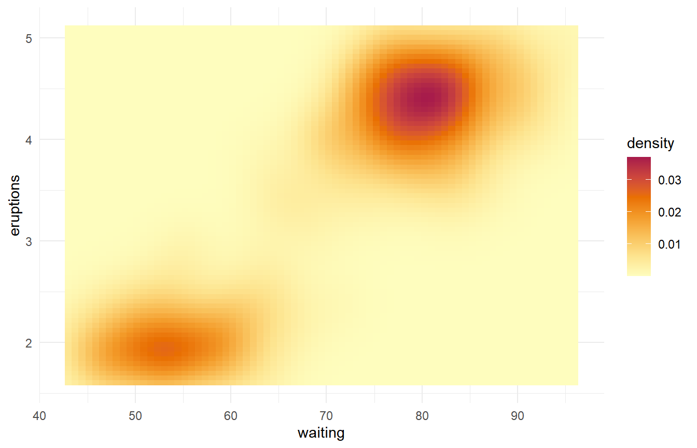
v + spectralscale::fill_c(rev = TRUE)
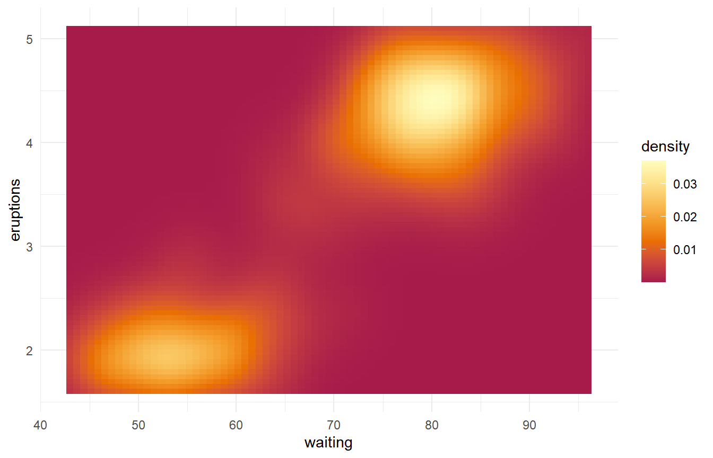
v + spectralscale::fill_b("warm") # same as default
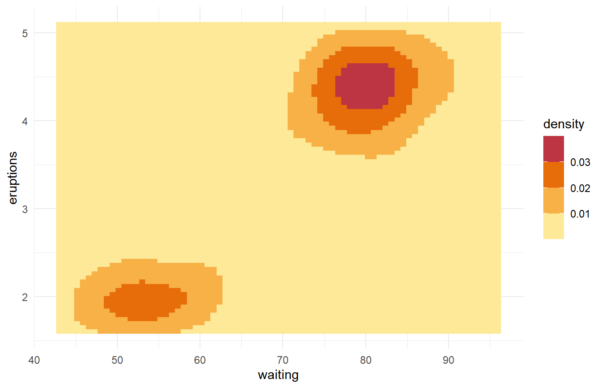
v + spectralscale::fill_c("cold")
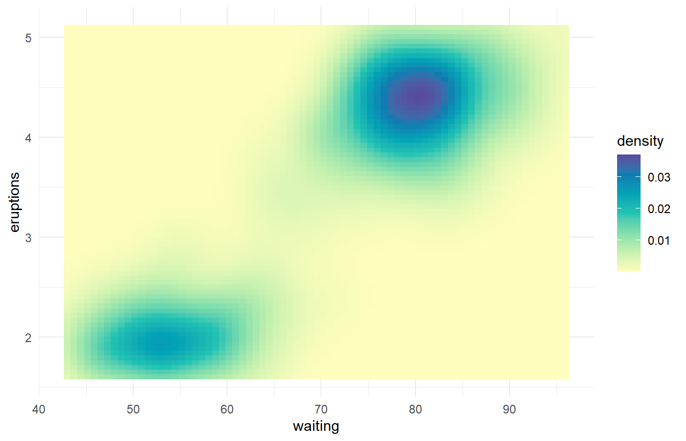
v + spectralscale::fill_c("div", mid = 0.02)
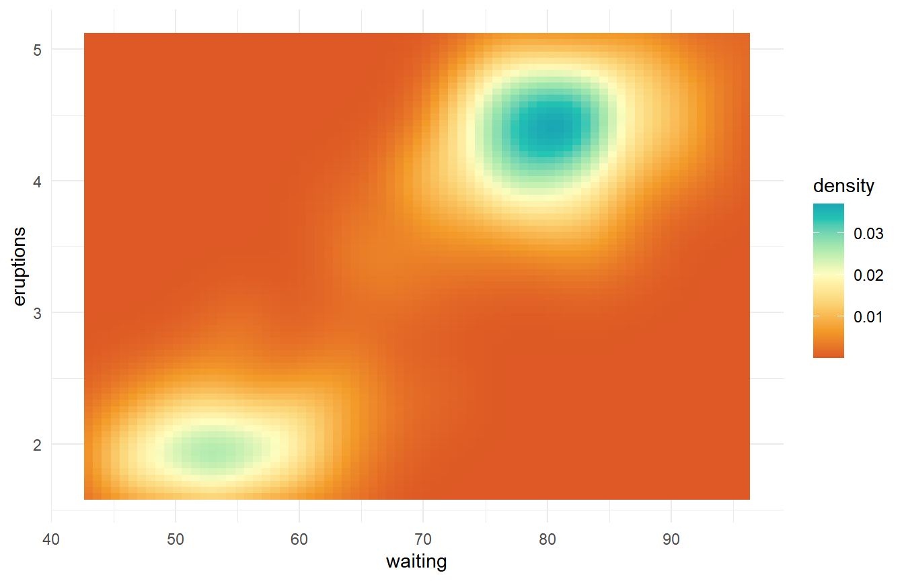